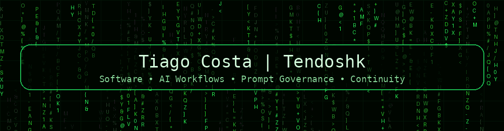

What it is
A governance and processing framework for AI-assisted workflows.
A public, sanitized conceptual showcase for response quality, context discipline, intellectual honesty and anti-hallucination workflows.

A governance and processing framework for AI-assisted workflows.
It is not persistent memory, not a raw-history vault, and not an automatic executor.
This showcase does not include private prompts, real checkpoints, raw history, personal data or sensitive internal mechanisms.